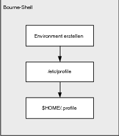
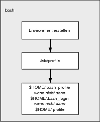
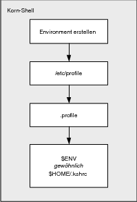

|
|
|
 8.9.2 Ausführen von Profildateien beim Start einer Login-Shell
|
||||||||||||||||||||||||||||||||||||||||||||||||||||||||||||||||||||||||||||||||||||||||||||||||||||||||||||||||||||||||||||||||||||||||||||||||||||||||||||||||||||||||||||||||||||||||||||||||||||||||||||||||||||||||||||
|
Hinweis Woher kommen bei einer Login-Shell die Umgebungsvariablen? Wenn Sie sich als Benutzer anmelden, startet login eine Shell. Welche das ist, steht in der passwd-Datei im letzten Feld. Diese Shell erzeugt nun eine Umgebung mit einer Reihe von Variablen. |
|
Die meisten dieser Werte werden automatisch auf einen Standardwert gesetzt, trotzdem gibt es auch einige benutzerspezifische Werte wie etwa HOME, in denen sich das Heimverzeichnis des eben eingeloggten Benutzers befindet. |
Wurden die systemspezifischen Konfigurationsdateien abgearbeitet, haben Sie die Möglichkeit, die Umgebung an die eigenen Bedürfnisse (bzw. für jeden Benutzer auf dem System) anzupassen. Hier enden dann auch die Gemeinsamkeiten der verschiedenen Shells, im Folgenden muss also auf die einzelnen Parteien eingegangen werden.
In der Bourne-Shell wird die lokale benutzerindividuelle Konfigurationsdatei .profile (im Heimverzeichnis des Benutzers $HOME/.profile) für eine interaktive Login-Shell eingelesen und interpretiert. Für die Bourne-Shell wäre der Login-Prozess somit abgeschlossen (siehe Abbildung 8.1).
|
Hinweis Wenn Sie in der Bash die Bourne-Shell (sh) aufrufen, so wird nach /etc/profile nur noch die Datei .profile durchlaufen. |
|
 Abbildung 8.1 Start einer Login-Shell (Bourne-Shell) |
In der Bash wird im Heimverzeichnis des Benutzers zunächst nach der Datei .bash_profile gesucht. .bash_profile ist die lokale benutzerindividuelle Konfigurationsdatei für eine interaktive Login-Shell in der Bash. Existiert die Datei .bash_profile nicht, wird nach der Datei .bash_login (ebenfalls im Heimverzeichnis) gesucht. Konnte weder eine .bash_profile noch eine .bash_login-Datei gefunden werden, wird wie schon bei der Bourne-Shell nach .profile Ausschau gehalten und ausgeführt (siehe Abbildung 8.2). Als Alternative für .bash_profile findet man auf vielen Systemen auch die Datei .bashrc (mehr zu .bashrc in Kürze).
|
 Abbildung 8.2 Start einer Login-Shell (Bash) |
Die Korn-Shell startet zunächst wie die Bourne-Shell die Datei .profile ($HOME/.profile) aus dem Heimverzeichnis des Benutzers. Jetzt wird noch eine weitere Datei ausgeführt, welche zusätzliche Parameter für die laufende Sitzung setzt. Diese Datei startet die Shell jedes Mal neu, wenn Sie eine weitere Shell aufrufen. Die Datei, die ausgeführt werden soll, findet die Korn-Shell in der Umgebungsvariablen ENV, welche bei einer der Profildateien zuvor (/etc/profile oder .profile) definiert und exportiert wurde. In der Regel handelt es sich hierbei um die Datei .kshrc im Heimverzeichnis des Benutzers. In dieser Datei findet man typischerweise alle Shell-Optionen, Funktionen, Aliase, die man nicht exportieren kann – daher wird auch bei jeder neuen Shell diese Datei neu ausgeführt (siehe Abbildung 8.3). Sie werden anschließend gleich feststellen, dass die Bash ohne eine Login-Shell auch nichts anderes macht und ebenfalls eine weitere Datei beim Start einer neuen Subshell aufruft.
|
Hinweis Hierbei handelt es sich wieder um das knifflige Thema, das am Anfang des Abschnitts angesprochen wurde. |
|
Auf einer BSD-Maschine findet man hier nur .cshrc, auf Debian wiederum findet man weder .cshrc noch .kshrc – ebenso wenig wie unter anderen Linux-Systemen (Fedora, SuSE). Aber auf einem Solaris-Rechner scheint die Welt wieder in Ordnung zu sein, hier ist .kshrc vorhanden (weil ja auch per Standard die Korn-Shell installiert wird). |
|
 Abbildung 8.3 Start einer Login-Shell (Korn-Shell) |
Gerade Linux-User, die den Abschnitt oben zu den Profildateien zur geliebten Bash gelesen haben, werden sich fragen, wo denn nun entsprechende Dateien sind. Häufig findet der User beim Hausgebrauch gerade mal die Datei .profile wieder. Ein Eintrag in diese Datei zeigt zunächst, dass sich in einer »xterm« hier gar nichts rührt. Sie können testweise eine einfache export-Anweisung in die Profildateien einfügen und mittels echo ausgeben lassen. Erst wenn eine echte Login-Shell (bspw. mit (Strg)+(Alt)+(F1)) geöffnet wird und sich der Benutzer in diese einloggt, werden die Einträge in .profile aktiv. Das ist auch kein Wunder, denn alles zuvor Beschriebene galt für eine echte Login-Shell (das Thema wurde bereits in Abschnitt 1.9.2 behandelt).
Sobald Sie allerdings ein Pseudo-Terminal (pts bzw. ttyp) öffnen, haben Sie aber keine Login-Shell mehr, sondern eine neue Subshell (bzw. eine interaktive Shell). Eine Subshell starten Sie ...
| beim Aufruf des Scripts mit sh ascript, ksh ascript, bash ascript oder einfach nur mit ascript und natürlich mit der Angabe der Shell in der ersten Zeile des Shellscripts (bspw. #!/bin/ksh ...). |
| beim direkten Aufruf einer Shell mit sh, ksh oder bash. |
Nun benötigt auch die Bash eine Startdatei, wie dies bei der Korn-Shell mit .kshrc standardmäßig der Fall ist. Der Grund ist hier derselbe wie schon bei der Korn-Shell. Auch hier ist es unmöglich, die Aliase, Shell-Optionen und Funktionen zu exportieren. Beim Starten einer Subshell zeigen also die Profildateien keine Wirkung mehr. Ganz einfach: Gäbe es hier keine weitere Startdatei, so gäbe es in der Subshell keine Aliase, Shell-Optionen und Funktionen, die Sie vielleicht sonst so regelmäßig einsetzen.
In der Korn-Shell, das haben Sie bereits erfahren, lautet die Startup-Datei .kshrc bzw. es ist die Datei, die in der Variablen ENV abgelegt wurde. Die Bash geht denselben Weg und führt gewöhnlich die Datei .bashrc im Heimverzeichnis des Benutzers aus. Allerdings gibt es in der Bash zwei Möglichkeiten. Wird eine neue Subshell im interaktiven Modus erzeugt (also einfach in der Arbeits-Shell durch einen Aufruf von bash), so wird die Datei .bashrc ausgeführt. Wird hingegen ein neues Script gestartet, wird die Datei gestartet, die sich in der Umgebungsvariablen BASH_ENV befindet. Sofern Sie allerdings BASH_ENV nicht selbst anpassen und eine andere Datei starten wollen, wird BASH_ENV gewöhnlich auch nur mit .bashrc belegt.
|
Hinweis Die Bourne-Shell ruft keinerlei Startdatei beim Aufrufen einer neuen Subshell auf. |
Es gibt allerdings noch zwei Ausnahmen, bei denen zwar eine Subshell erzeugt, aber nicht die Startup-Datei .bashrc bzw. .kshrc ausgeführt wird. Und zwar ist dies der Fall beim Starten einer Subshell zwischen runden Klammern ( ... ) (siehe Abschnitt 8.5) und bei der Verwendung einer Kommando-Substitution. Hierbei erhält die Subshell immer jeweils eine exakte Kopie der Eltern-Shell mit allen Variablen. Und natürlich wird auch keine Startup-Datei ausgeführt (auch keine Subshell), wenn Sie ein Script in der aktuellen Shell mit einem Punkt aufrufen.
Tabelle 8.4 bietet zum Schluss noch einen kurzen Überblick zu den Dateien (und Variablen), die bezüglich der Initialisierung für Shells und Shellscripts bedeutend sind.
| Datei | sh | ksh | bash | Bedeutung |
| /etc/profile | x | x | x | Diese Datei wird von einer interaktiven Login-Shell abgearbeitet und setzt systemweite, vom normalen Benutzer nicht veränderbare Einstellungen. Hier werden häufig weitere Initialisierungsdateien aufgerufen. |
| $HOME/.profile | x | x | x | Diese Datei ist die lokale benutzerdefinierte Konfigurationsdatei für eine interaktive Login-Shell, welche der Benutzer an die eigenen Bedürfnisse anpassen kann. |
| $HOME/.bash_profile | x | Diese Datei ist die lokale benutzerdefinierte Konfigurationsdatei für eine interaktive Login-Shell, welche der Benutzer an die eigenen Bedürfnisse anpassen kann (wird gegenüber .profile bevorzugt behandelt und verwendet). | ||
| $HOME/.bash_login | x | Wie .bash_profile. Wird verwendet, wenn .bash_profile nicht existiert, ansonsten danach ausgeführt. | ||
| $HOME/.bashrc | x | Diese Datei ist die lokale benutzerdefinierte Konfigurationsdatei für jede interaktive Shell, die keine Login-Shell ist, welche der Benutzer den eigenen Bedürfnissen entsprechend anpassen kann. | ||
| $HOME/.kshrc | x | Diese Datei ist die lokale benutzerdefinierte Konfigurationsdatei für jede interaktive Shell, die keine Login-Shell ist, welche der Benutzer an die eigenen Bedürfnisse anpassen kann. | ||
| $BASH_ENV | x | Die Startup-Datei, welche beim Ausführen einer nicht interaktiven Shell (bspw. Shellscript) zusätzlich ausgeführt wird. Meistens mit .bashrc belegt. | ||
| $ENV | x | Die Startup-Datei, welche von der Korn-Shell bei jeder weiteren Shell gestartet wird. Der Wert ist meistens mit der Datei .kshrc belegt. | ||
| $HOME/.bash_logout | x | Diese Datei kann bei einer Beendigung bzw. Abmeldung aus einer Login-Shell für Aufräumarbeiten verwendet werden. | ||
| /etc/inputrc | x | In dieser Datei wird die systemweite Vorbelegung der Tastatur für die Bash und andere Programme definiert, welche die C-Funktion readline zum Lesen der Eingabe verwenden. Veränderungen sind dem Systemadministrator (root) vorbehalten. | ||
| $HOME/.inputrc | x | Wie /etc/inputrc, nur dass hier der normale Benutzer eigene Einstellungen vornehmen darf. |
Wie hat Ihnen das <openbook> gefallen? Wir freuen uns immer über Ihre freundlichen und kritischen Rückmeldungen.
>> Zum Feedback-Formular| << zurück |
|
||||||||||||
|
||||||||||||
|
||||||||||||
Copyright © Rheinwerk Verlag GmbH 2005
Für Ihren privaten Gebrauch dürfen Sie die Online-Version natürlich ausdrucken. Ansonsten unterliegt das <openbook> denselben Bestimmungen, wie die gebundene Ausgabe: Das Werk einschließlich aller seiner Teile ist urheberrechtlich geschützt. Alle Rechte vorbehalten einschließlich der Vervielfältigung, Übersetzung, Mikroverfilmung sowie Einspeicherung und Verarbeitung in elektronischen Systemen.


 bestellen
bestellen